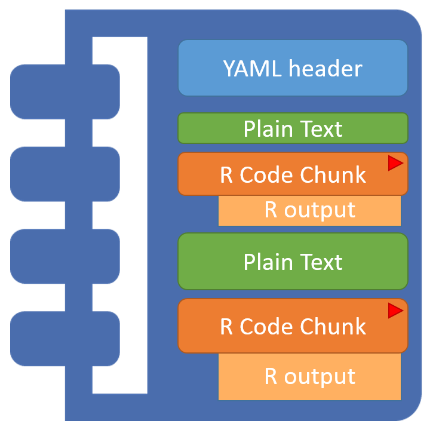
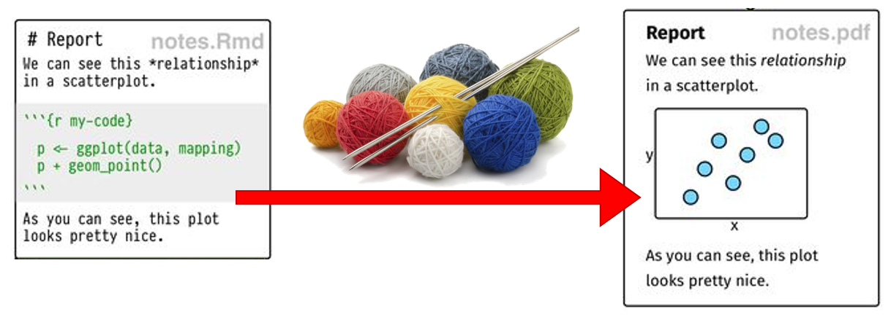
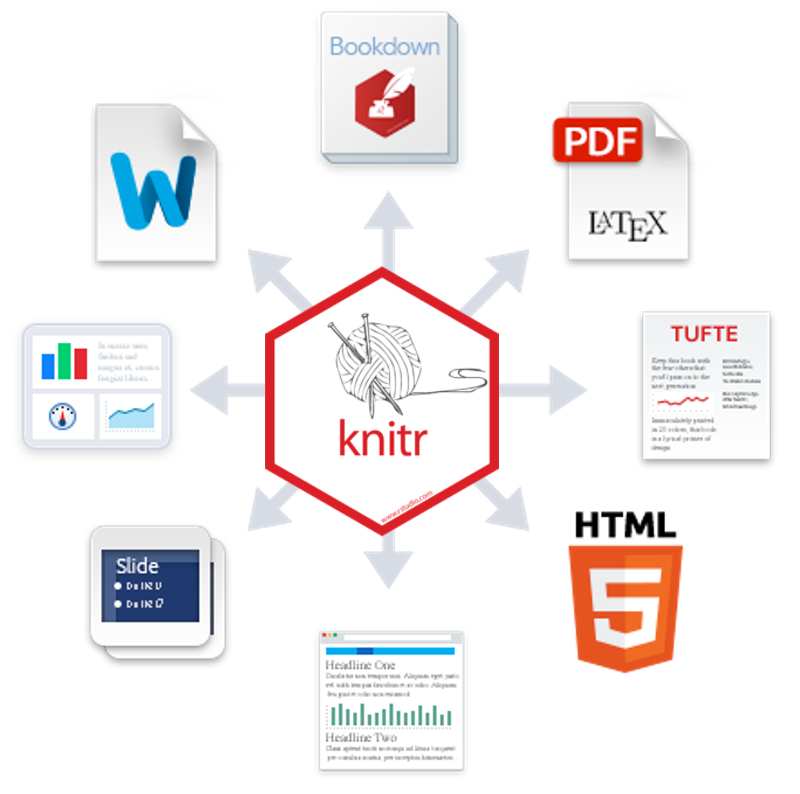

1 Overview
Before we get busy downloading and installing the actual software, here is the big picture.
1.1 R vs. R Studio
| R | R Studio |
|---|---|

|

|
| Programing Language | Interface Program |
| Install and Ignore | Interact with Constantly |
| Engine | Dashboard |
“Many users think of \(R\) as a statistics system. We prefer to think of it of an environment within which statistical techniques are implemented. \(R\) can be extended (easily) via packages. There are about eight packages supplied with the \(R\) distribution and many more (over 10,000) are available through the \(CRAN\) family of Internet sites covering a very wide range of modern statistics.” - www.r-project.org
“Where as \(R\) is a programming language that runs computations, \(R Studio\) is an integrated development environment (IDE) that provides an interface by adding many convenient features and tools. So the way of having access to a speedometer, rearview mirrors, and a navigation system makes driving much easier, using \(RStudio’s\) interface makes using \(R\) much easier as well.” - Chester Ismay and Albert Y. Kim
For a more in-depth discussion on the difference between \(R\) and \(R Studio\) IDE, watch this DataCamp video (2m52s).
1.2 R Markdown vs. R Notebook
| R Markdown | R Notebook |
|---|---|
|  | |
Plain text that includes shorthand notation to denote formatting, instead of relying on a text editor program display (MS Word). Files are saved with the .Rmd extension.
|
A specific kind of .Rmd file in which the code chunks may be interactively executed/run onscreen and the results/output are shown directly below each code chunk.
|
\(R Markdown\) documents are fully reproducible. You may use the productive notebook interface to weave together narrative text and code to produce elegantly formatted output.
More details at the R Studio website: R Markdown, lesson 1 and R Notebooks
1.3 knit-R

With the click of a button, the knitr package converts a \(R notebook\) (.Rmd) to an intermediary Markdown file (.md), which \(R Studio\) will further transform to various final file types, including (Xie 2015):
.pdfusing \(LaTeX\) (beautiful).htmlusing another package called \(markdown\) (highly viewable)Worddocument using Pandoc (probably be ugly)

knitr is an engine for dynamic report generation with \(R\). It is a package in the statistical programming language \(R\) that enables integration of R code into \(LaTeX\), \(LyX\), \(HTML\), \(Markdown\), \(AsciiDoc\), and \(text\)s documents (Xie 2021).
The professionals ar \(R Studio\) show it better at their website.
1.4 More Indepth FAQs
Helpful Websites: Quick R: Basic Statistics and Introduction to R
What is R ?
\(R\) is a language and environment for statistical computing and graphics. (R Core Team 2021)
\(R\) provides a wide variety of statistical (linear and nonlinear modelling, classical statistical tests, time-series analysis, classification, clustering, …) and graphical techniques, and is highly extensible. The \(S\) language is often the vehicle of choice for research in statistical methodology, and \(R\) provides an Open Source route to participation in that activity.
One of \(R\)’s strengths is the ease with which well-designed publication-quality plots can be produced, including mathematical symbols and formulae where needed. Great care has been taken over the defaults for the minor design choices in graphics, but the user retains full control.
What is R Markdown ?
According to R Studio:
“\(R Markdown\) is a format that enables easy authoring of reproducible web reports from \(R\). It combines the core syntax of Markdown (an easy-to-write plain text format for web content) with embedded \(R\) code chunks that are run so their output can be included in the final document.”
What is Dynamic Reporting?
From Penn State Statistics:
The traditional way to write a report:
- Run your analysis in software, like SPSS, and manually save our output
- i.e. saving huge output files with hundreds of pages
- Type your your description and interpretation in a text editor, like Word,
- either drag/drop tables or worse retyping all the numbers
A report written in this way can be problematic. For instance, imagine your Mentor/collaborator/journal reviewer telling you that they want to use a sub-sample instead of the entire sample, or exclude three subjects for a specifica reason. Or more likely to include another variable. You would have to redo all of your work!!
If you are using a \(R Notebook\), you just change/add a few lines of code and re-run the entire file. Everything gets updated internally. Hours saved!
Another bonus is that the single \(R Notebook\) file includes exact details of every step: which data file you used, how your cleaned/wrangled your data, and exactly how models were specified. Therefore, in this way dynamic also means reproducible, in the sense that people who get the file from you can reproduce the entire work in the report. No guessing which version of your file you used and hunting through stacks of output.
Is this a popular method for creating reports?
YES!
Check out Rpubs. This website shares lots of documents written in the way we will introduce below.